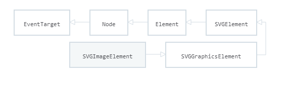

An image consists of a rectangular array of dots called pixels. The size
of the image is specified in terms of width X height, in numbers of the
pixels. The physical size of the image, in inches or centimeters, depends
on the resolution of the device on which the image is displayed. The
resolution is usually measured in DPI (Dots Per Inch). An image will
appear smaller on a device with a higher resolution than on one with a
lower resolution. For color images, one needs enough bits per pixel to
represent all the colors in the image. The number of the bits per pixel is
called the depth of the image.
Image data types
Images can be created by using different techniques of representation of
data called data type like monochrome and colored images. Monochrome image
is created by using single color whereas colored image is created by using
multiple colors. Some important data types of images are following:
1-bit images-
An image is a set of pixels. Note that a pixel is a picture element in
digital image. In 1-bit images, each pixel is stored as a single bit (0 or
1). A bit has only two states either on or off, white or black, true or
false. Therefore, such an image is also referred to as a binary image,
since only two states are available. 1-bit image is also known as 1-bit
monochrome images because it contains one color that is black for off
state and white for on state. A 1-bit image with resolution 640*480 needs
a storage space of 640*480 bits. 640 x 480 bits. = (640 x 480) / 8 bytes =
(640 x 480) / (8 x 1024) KB= 37.5KB. The clarity or quality of 1-bit image
is very low.
8-bit Gray level images-
Each pixel of 8-bit gray level image is represented by a single byte (8
bits). Therefore each pixel of such image can hold 28=256 values between 0
and 255. Therefore each pixel has a brightness value on a scale from black
(0 for no brightness or intensity) to white (255 for full brightness or
intensity). For example, a dark pixel might have a value of 15 and a
bright one might be 240.
A grayscale digital image is an image in which the value of each pixel is
a single sample, which carries intensity information. Images are composed
exclusively of gray shades, which vary from black being at the weakest
intensity to white being at the strongest. Grayscale images carry many
shades of gray from black to white. Grayscale images are also called
monochromatic, denoting the presence of only one (mono) color (chrome). An
image is represented by bitmap. A bitmap is a simple matrix of the tiny
dots (pixels) that form an image and are displayed on a computer screen or
printed.
A 8-bit image with resolution 640 x 480 needs a storage space of 640 x 480
bytes=(640 x 480)/1024 KB= 300KB. Therefore an 8-bit image needs 8 times
more storage space than 1-bit image.
24-bit color images -
In 24-bit color image, each pixel is represented by three bytes, usually
representing RGB (Red, Green and Blue). Usually true color is defined to
mean 256 shades of RGB (Red, Green and Blue) for a total of 16777216 color
variations. It provides a method of representing and storing graphical
image information an RGB color space such that a colors, shades and hues
in large number of variations can be displayed in an image such as in high
quality photo graphic images or complex graphics.
Many 24-bit color images are stored as 32-bit images, and an extra byte
for each pixel used to store an alpha value representing special effect
information. A 24-bit color image with resolution 640 x 480 needs a
storage space of 640 x 480 x 3 bytes = (640 x 480 x 3) / 1024=900KB
without any compression. Also 32-bit color image with resolution 640 x 480
needs a storage space of 640 x 480 x 4 bytes= 1200KB without any
compression.
8-bit color images -
8-bit color graphics is a method of storing image information in a
computer's memory or in an image file, where one byte (8 bits) represents
each pixel. The maximum number of colors that can be displayed at once is
256. 8-bit color graphics are of two forms. The first form is where the
image stores not color but an 8-bit index into the color map for each
pixel, instead of storing the full 24-bit color value. Therefore, 8-bit
image formats consists of two parts: a color map describing what colors
are present in the image and the array of index values for each pixel in
the image. In most color maps each color is usually chosen from a palette
of 16,777,216 colors (24 bits: 8 red, 8green, 8 blue).
The other form is where the 8-bits use 3 bits for red, 3 bits for green
and 2 bits for blue. This second form is often called 8-bit true color as
it does not use a palette at all. When a 24-bit full color image is turned
into an 8-bit image, some of the colors have to be eliminated, known as
color quantization process.
A 8-bit color image with resolution 640 x 480 needs a storage space of 640
x 480 bytes=(640 x 480) / 1024KB= 300KB without any compression.
Color lookup tables
A color loop-up table (LUT) is a mechanism used to transform a range of
input colors into another range of colors. Color look-up table will
convert the logical color numbers stored in each pixel of video memory
into physical colors, represented as RGB triplets, which can be displayed
on a computer monitor. Each pixel of image stores only index value or
logical color number. For example if a pixel stores the value 30, the
meaning is to go to row 30 in a color look-up table (LUT). The LUT is
often called a Palette.
Characteristic of LUT are following:
The number of entries in the palette determines the maximum number of
colors which can appear on screen simultaneously.
The width of each entry in the palette determines the number of colors
which the wider full palette can represent.
A common example would be a palette of 256 colors that is the number of
entries is 256 and thus each entry is addressed by an 8-bit pixel value.
Each color can be chosen from a full palette, with a total of 16.7 million
colors that is the each entry is of 24 bits and 8 bits per channel which
sets the total combinations of 256 levels for each of the red, green and
blue components 256 x 256 x 256 =16,777,216 colors
The SVGImageElement interface corresponds to the <image> element.

Getting images to draw
The canvas API is able to use any of the following data types as an image
source
HTMLImageElement
These are images created using the Image() constructor, as well as any
<img /> element.
SVGImageElement
These are images embedded using the <image> element.
HTMLVideoElement
Using an HTML <video> element as your image source grabs the current
frame from the video and uses it as an image.
HTMLCanvasElement
You can use another <canvas> element as your image source. These
sources are collectively referred to by the type CanvasImageSource. There
are several ways to get images for use on a canvas.
Using images from the same page
We can obtain a reference to images on the same page as the canvas by
using one of:
The document.images collection
The document.getElementsByTagName() method
If you know the ID of the specific image you wish to use, you can use
document.getElementById() to retrieve that specific image
Using images from other domains
Using the crossorigin attribute of an element (reflected by the
HTMLImageElement.crossOrigin property), you can request permission to load
an image from another domain for use in your call to drawImage(). If the
hosting domain permits cross-domain access to the image, the image can be
used in your canvas without tainting it; otherwise using the image will
taint the canvas.